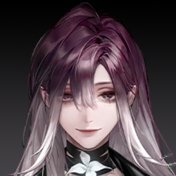
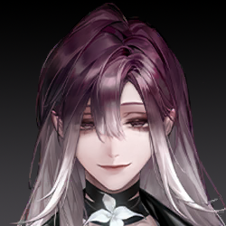

N.F.113年7月23日 08:05
セヴェロの仕立て屋
概要：数日間、セヴェロはエリカ山荘の警備員（能力者を含む）と何度も正面衝突した。「GARDEN」に戻って休息しようとした矢先、
調査員が訪ねてくる。
セヴェロは一瞬の情け深き、自身と「同じ境遇」に見える調査員を引き込もうとし、「上庭に傷つけられた同類」だと説得、
「GARDEN」の首領レオポルドが復讐を助けられると伝えた。しかし、その優しさは強く拒絶され、逆に調査員に裏切られた。最終的にセヴェロは罠に落ち、能力者対策の部隊に制圧され、昏迷状態に陥る。調査員もSan値が限界に達し、一時的に行動不能となる。

もう、FACの伝統って優しく礼儀正しいことじゃなかった？なんで私にはそんな乱暴なのさ。戦友の未亡人なんだから、ちょっと手加減してよ、ね？
めっちゃ下手な殺し屋だね。嘘八百ならまだしも、こんなに無駄話が多いなんて笑えるよ。
彼女は大盾を振り上げ、接客用の丸テーブルを「店主」めがけて投げる。女は身を翻してかわし、片手で数本の弩矢を引き抜いて反撃。両者はその勢いで距離を取る。
これらはすべて私の人生で実際に経験したことです。
西区に新しい黒環ができたよね。お前の仲間、どれだけそこで死んだ？知ってるよ、FACの誇らしい伝統――意味のない、わけわかんない「偉大な犠牲」を崇めること。だからさ、むしろ私たち、同病相憐れむべきじゃない？もっと話すべきだよ…っと！
彼女は叫びながら二度目の攻撃をかわす。それは至近距離での突撃だったが、空を切った。調査員は自分の動きが遅くなり、身体が思うように動かなくなっていることに気づく。
正解、さすがだね。お前たちの戦い方、知ってるよ。怪物と正面からぶつかり合うのが好きで、怖がらず避けず、いつも命を惜しまず盾になる。これに対抗するには、この手が一番効くの。
おっと、動かないで。この毒にはちょっとだけ狂厄の汚染が混ざってる。もし異方晶持ってるなら、静かに浄化を待った方がいい。今はまだお前を傷つけたくないから。
あなたと話したいんだ。
殺し屋は追撃せず、逆に顔の軽薄な笑みが徐々に消える。
この4ヶ月、城邦のすべての黒環が活発化して、FACの全戦力は正面戦場に投入されてる。新城の悪質な事件に対応する余裕なんてないから、ずっと前に第九機関に引き継がれてるよね。
ボディガード、いや、FAC-G47小隊の能力者、お前がここにいるはずない。上級からの援護命令なんて出てないでしょ。
勝手に新城に戻って、関係ない事件に無理やり介入して、手がかり見つけても報告せず、単独で私みたいな「殺し屋」に会いに来た…お前の能力者の力だって、クリーンじゃないよね？
身FACとして、服従と忠誠がお前の務めなのに、お前はあまりにも多くの一線を越えた。どれか一つでも、裁判沙汰になるよ。
…いや、お前のこと、お前が思う以上に理解してるよ。
お前は内海の「蝕月作戦」に参加して、唯一の生き残り。ここに来たのは復讐のためだけだよね。
103年、FACは緊急命令を受け、28の中隊が秘密裏に内海へ向かい、BR-000に突入。情報も時間も不足の中で、作戦は何の成果も上げず、お前以外全員戦死。
愚かな作戦だった。でも事後、戦術を立案した指揮官は姿を消し、すべての損失と責任はFACに押し付けられた。
こんなこと知ったら、誰だって納得いかないよ。私たちと同じさ。
私の父はFACの後方支援部で輸送員だった。N.F.83年、基地で、作戦から持ち帰った異物に感染して、死ぬまでそれが何かわからなかった。
父は狂厄に侵され、混乱の中で検疫も受けず家に帰り、母や妹の前で怪物に変わった…
お前と同じ、あの夜、私も惨めな生き残りだった。お前の憎しみ、わかるよ。
この何年も、お前はたくさんのものを犠牲にして、能力者になって、ひとりで憎しみを耐え抜いて上庭の犬になった。それでも、黒幕の端っこにも触れられない。
お前が歩いてるこの真っ暗で冷たい道、私も同じように歩いてきた。
私たちの人生は一瞬で崩れ、すべて壊された。正義なんて誰も返してくれない。だから、自分で取り戻すしかない。この世界には、多少なりとも道理があるべきじゃない？
彼女は調査員に手を差し出し、紫のカーネーションを渡す。
お前の敵じゃない、同類だ。お前にはまだたくさんの同類がいるよ。
この世には私たちを受け入れてくれる場所がある。理解してくれる人がいる。彼女はお前を導き、過酷な復讐を支えてくれる。お前にその覚悟があれば、私が彼女に会わせてあげる。
お前が言うその人は、お前の雇い主？それともお前たちの組織の首領？
やっと手に入れた私の新しい家族だよ。
彼女の答えは誠実で、その感情が調査員に伝わったようだ。FACの戦士はしばらく黙り込む。
じゃあ、お前が放った汚染や、連れてきた怪物も、彼女がくれた「助け」？それで「復讐」するの？この数日で死んだ普通の人たちが何の罪を犯した？彼らがお前に命を奪われる理由は？
殺し屋は敵意を鋭く感じ取り、目に一瞬の遺憾が閃く。彼女は数本の長い針を手に取り、毒素の効果時間を計算しながら、最後の説得を試みる。
彼らはみな上庭の人間だ。上庭は決して無垢じゃない、みんなくそくらえの敵だ。一番強く、一番恐ろしい敵。
お前も彼らを憎んでるよね？
お前が命がけで能力者になったように、私も彼らに対抗する力が必要だった。手に入れるために戦い、捨てるものもあった。
復讐はすべてを捧げるもの。お前が一番わかってるよね？今、お前にはそのチャンスがある。私たちが助けてあげるよ。
…もしお前の言うことが本当なら、わかったよ。「私たち」なんていない。ふざけるな、私とお前を一緒にするな。
彼女は体に装着していた異方晶を外し、投げ捨て、両手で大盾を叩きつける。体内の毒素は、より激しい狂厄によって中和され、同化される。
お前…裏のゴロツキのために働いて、狂厄を乱用して無辜の人々を殺し、復讐を口実に悪事を働く。お前は私の仲間なんかじゃない、ただの利用されてるピエロだ。
…本当に残念だ。本気でお前を家に連れて帰りたかった。
両者の力の差は歴然で、一瞬にしてセヴェロは地面に叩きつけられ、戦闘不能に。続けて大盾が彼女に重くのしかかり、床に押さえつけられて動けなくなる。
うっ…咳咳、なんて恐ろしい力…こんな力手に入れるために、どんな悪事を働いた？お前の愛するFACは知ってる？
お前の背後にいる奴は誰？「家族」って呼んでるくらいだから、仲いいんだろ？お前を捕まえたら、彼女が自分から現れるかな？

…何をしようって？
上庭に入りたい。上庭はお前たちを欲しがってる。だから、見ず知らずの礼として、お前とお前の背後の奴がちょうどいい。
…なるほど、お前たちが欲しいのは私だけじゃないってわけね…
さあ、選べ。自分から白状するか、お前の「家族」が助けに来るのを待つか。彼女が復讐者の救世主なら、きっと来るよね？
ふふふ…そう見ると、お前には悪鬼の才能があるね…正義にこだわるのやめたら？もうFACには向いてないよ。
大盾が再び強く叩きつけられ、骨が折れる音が聞こえたようだ。セヴェロは痛みにうめきながらも、顔には弱々しくも陶酔した笑みが浮かぶ。今、彼女の目にはもはや優しい誘いはなく、憎悪と殺意だけが宿っている。
ふふふ、10年も耐えたのに、今さら急いでどうするの？モノはもう渡したよ…あの花箋、見た？読めなかった？
中に何が入ってるか、はっきり言え。暗号ゲームはごめんだ。
調査員は眉をひそめ、力を込めるが、殺し屋の身体は今、水のように柔らかく、すべての暴力がスポンジに吸い込まれるようだ。彼女の顔の笑みはますます深く、不快感を与える。
簡単だよ。一歩ずつ解いていこう。
（OJAJPTTJの字母Oを0に置き換え、残りの字母を携帯の九宮格キーボードに基づいて数字に変換し、最終的に「05257885」を得る）
通信暗号だよ。蝕月作戦期間中、唯一内海の黒環を貫通した情報番号。この番号を通じて、環内のお前たちに命令が下された。発信元は誰も見つけられない上庭だ。
彼女はゆったりと話し、突然地面のほぼ見えない糸を引っ張る。壁の仕掛けが作動し、数本の長い針がシュッと飛び出し、針には怪しい術式が絡まる。調査員は大盾を離さず、腕でその攻撃を硬く受け止める。
今度の針には神経毒素ではなく、もっと邪悪で穢れた何か…まるで生き物のように調査員の身体と意識に潜り込む。彼女の視界は徐々に赤く染まり、敵の声は遠くなる。
気づいた？この通信の向こう側が、お前がディスを10年探しても見つけられなかった仇だよ。
その悪夢のような数字の羅列が調査員の脳を占領し、体内で沸騰する狂厄を点火する。同時に、決して逃れられなかった狂気の記憶を呼び覚ます。
内海が予定より早く満潮を迎え、この臨時防線じゃ持ちこたえられない！撤退を要請する！撤退しなきゃ！！
05257885：障壁突破、超環観測錨点構築、狂厄ノイズ排除、リンク安定。
N.F.113年8月26日
第二観測庭 Xの精神空間
ぼんやりと目を開け、意識が再び戻った時、レオポルドは奇妙な空間に立っていた。
そこは壮大な三角形の殿堂で、高さは百メートル近くに及ぶ。
彼女は細かく見定めようとしたが、じっと見つめるほどに、その頂点は高く、遠くに感じられた。
諦めた。彼女はここで妙に冷静になり、これが人類の理解を超えるものだとはっきりわかった。
背後は靄に覆われ、目の前には光の筋が現れ、魂の深部に触れるようだった。何かが彼女を待っている。レオポルドは前に進んだ。
徐々に、長い廊下は狭くなり、ドームは高くそびえ、両側の傾いた壁は次第に開き、細長い垂直の障壁に変わった。まるで「戻れ、戻れ」と警告しているかのようだった。
それでもレオポルドは進み続けた。やがて狭い通路を抜け、果てしない、死のように静かな空間にたどり着いた。
中央にシャーロームが立っていた。彼女の背後には、垂直の亀裂が静かに浮かび、見えない頂点へと続く。暗闇の中で唯一の光だった。

ようこそ、業師。見事に侵入したね。
レオポルドは剣を抜こうと手を挙げたが、即座に青い光の刺が彼女の腕を貫き、力が発動する前に消滅した。
力を動かすのはやめた方がいいよ。悪い考えがあるなら、口で言うだけでいい。行動に移すのはダメ。ここでは、狂厄も反逆も絶対に「許されない」存在だから。

へえ、そう？
そう言うと、彼女は素手でシャーロームの胸を突き刺した。血が滲んだが、相手は痛みの表情を一切見せなかった。逆に、虚空から鋭い青い光の刺がレオポルドの手の甲を貫いた。
それはシャーロームの力ではなく、この場を超える、もっと高次のルールだった。だが、レオポルドは動じなかった。
そう言って手を引き抜き、シャーロームの首を掴んで力強く地面に叩きつけた。背中に数本の光の刺が突き刺さった。
上庭の技術、たいしたもんだ。ここじゃお前を殺せない？ここは何の意識空間？
シャーロームは微笑んだ。口を開かず、笑い声が直接レオポルドの脳内に響き、気持ち悪さに鳥肌が立った。

びっくりした？さっき喉を締められて声が出せなかったから、意識で直接話しただけ。慣れないよね。
そう言って、彼女は立ち上がり、スカートの埃を払い、レオポルドと向き合った。
この意識空間は上庭が構築した理性の境界。重層的な防護の下、狂厄を深く観測する最前線だよ。
そこまで深くはないけど、普通の黒環よりは源に近い。だから、ここには厳密な防御ルールが設けられてる。君や私の行動衝動を制限して、向こう側の狂厄の浸透を防ぐためだ。
君は能力者、予期せぬ来訪者だ。ここ、かなりキツイでしょ。
その通りだった。レオポルドは自分の手を見た。何もしていなくても、細かな青い光の針が浮かび、チリチリと痺れ、力を抑え込むように青い雨が降る。まるで何かを警告しているようだった。
レオポルドはシャーロームを見た。執行人の体には何の痕跡もなく、平然としていた。

私はずっとここにいるから。すべてのルールに慣れ、使いこなしてる。どんな複雑なルールも私の自由を縛れない。
私は7代目の執行人。上庭は私の感情を切り離して、亀裂の向こうに送った。
純粋に理性だけの私が前線に安定して留まり、感性は狂厄の奥深くで、世界と人の心の変化を観測してる。
……それが福音地を震え上がらせた「技術」か。気持ち悪いね。そりゃ、お前、心のない人形みたいだ。
残酷な時代だよ。人は複雑で解けない難局にいつも直面する。誰かが状況を観察し、変化を分析し、方案を出し、実行する必要がある。私はそれが得意。私の仕事は要求を受け、死局で正解を見つけること。
助ける？あんなことをしておいて、まだ綺麗事を述べるつもり?今更破れた仮面を繕って被り直して、私を馬鹿にでもしているの!?
君がバカじゃないのはわかってる。だから、聞いて。私の代わりに何百何千もの人が君たちを潰しに来るけど、君と話すのは私だけだ。
「Garden」の結末は決まってる。福音地に捕らわれた時点で、両陣営の戦火で引き裂かれる運命だ。狭間にいる者の宿命だよ。
新しい戦争がもうすぐ始まる。私がいてもいなくても、君たちは逃げられない。だから必死に抗ってる。
でも、命をかけて築いた避難所は、君の命が尽きると共に崩れる。今回の復讐じゃ君は救われない。